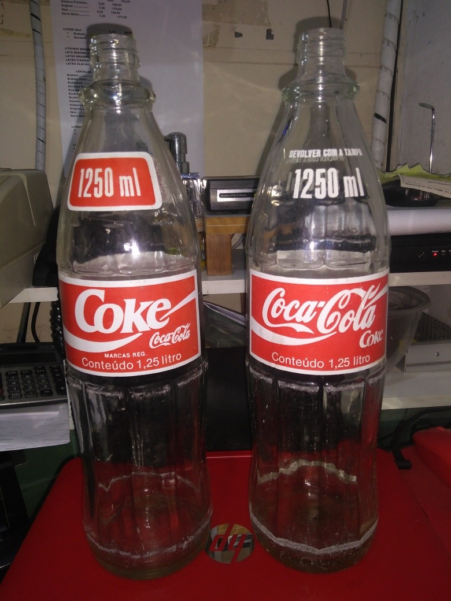
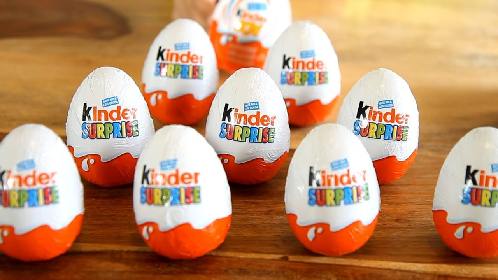
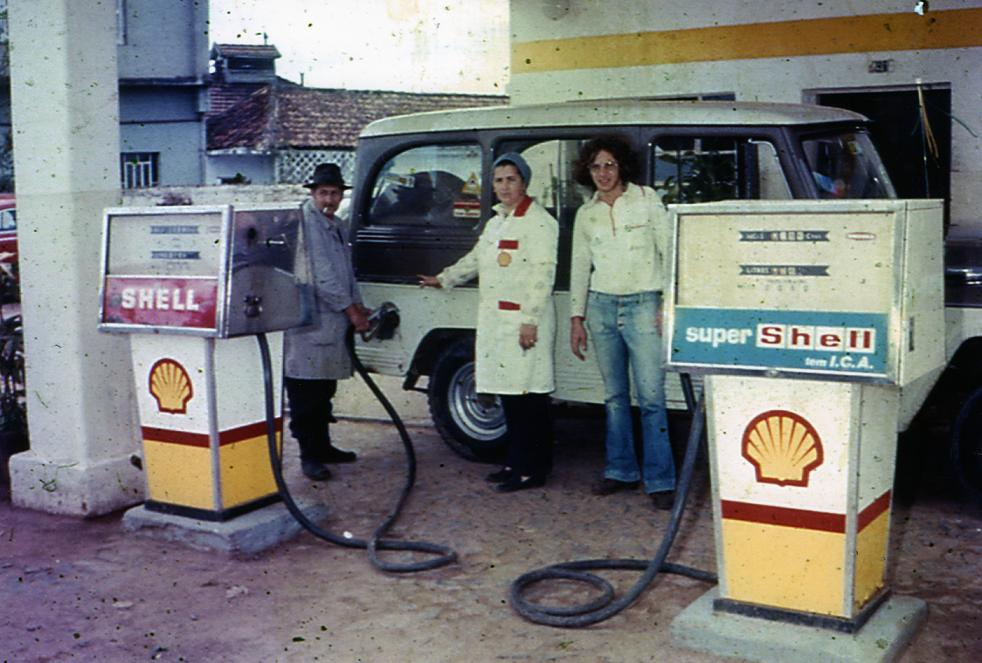
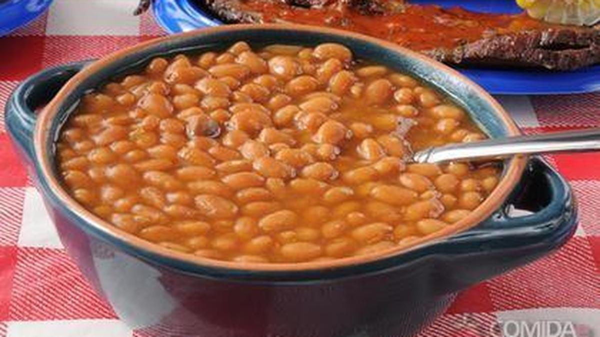

O que dava para comprar com R$: 1,00 real nos anos 90? 🤔💰

Eu passei meio longe dos anos 90, infelizmente, mas sempre fiquei doido com os valores, acabava vendo vídeos sobre comparativos e por muitas vezes ficava maluco com o que você conseguia comprar com 1 real na época, obviamente que hoje não podemos mais. Porém, entretanto e toda via, eu fiz esse site para a gente dar uma olhada (pessoas nascidas em 2000 pra cima 😑) e chorar com o que conseguiriamos comprar naquela época.
🥃 Coca-Cola de 1,25 L (Particularmente, nunca nem vi na vida)
Pois é pessoal, já existiu uma coca-cola de 1,25L, eu mesmo não sabia da existência dela, e pasmem, sabe quanto ela custava? A coca cola de 1,25L custava menos de R$: 0,70 centavos, era de vidro retornável e hoje não existe mais.
Locadora de Vídeo-Game 🕹️

Essa daqui o Cris deve ter se acabado na infância, cara eu peguei o finalzinho disso, e tem uma viva até hoje perto de casa, saudades senhores...
Mas o que todos querem saber é o preço, então vamos lá, as crianças brincavam a tarde toda em locadoras de video-game com fichas que custavam apenas R$: 0,10 centavos a hora. (nem o chiclete é mais 10 centavos)
🍫 Kinder Ovo
Sem dúvidas pessoal, esse foi um dos items que mais teve o seu valor inflacionada, hoje você tem duas escolhas, ou você tem uma casa própria ou tem um Kinder Ovo, por que meu Deus, o negócio é caro demais.
O Kinder Ovo custava apenas R$: 0,50 centavos nos anos 90, hoje sem brincadeira você encontra por R$: 15,00 reais a unidade.
Gasolina 🚗
Chegamos a tão polemica gasolina, hoje com o seu preço perto de R$; 6,00 reais o litro e em outros estados até ultrapassando esse valor, nos anos 90 quem tinha Chevette, Kadett, Monza, entre outros, ficava sossegado, pois o valor da gasolina era de R$: 0,53 centavos por litro. (Com R$: 10,00 reais você abastecia o tanque e ainda comprava uma Coca)
🍞 Pão Francês ou Pão de Sal
Pão francês, ou pão de sal, custava R$: 0,10 centavos, ou seja, um real dava 10 pães, hoje muitas vezes são vendidos no quilo e em alguns lugares chega a custar 0,50 centavos cada pão.
1 kg de Feijão 😋
Pois é pessoal, nos anos 90, você comprava 1kg de feijão por apenas R$: 0,79 centavos, hoje não preciso nem falar o valor do kg né? Chegando de 7 reais (os mais simples) até os de 9 reais o kg.
💵 Dólar

O dólar nos anos 90 chegou a incrível bagatela de 1 real por 1 dólar, hoje um dólar está no valor de R$: 5,26 reais. Fazendo um comparativo rápido, se você tem 1 dólar, equivale a duas mansões no bairro dos Jardins em SP, uma Ferrari Aventador e ainda consegue comprar uma cobertura simples na Barra Funda.
QUANTO CUSTAVAM AS COISAS NOS ANOS 90?!
Acesse o vídeo completo no Youtube.
10 Coisas que você comprava com 1 Real nos Anos 90 [Canal 90]
Acesse o vídeo completo no Youtube.
Você pode acessar o canal, clicando aqui.